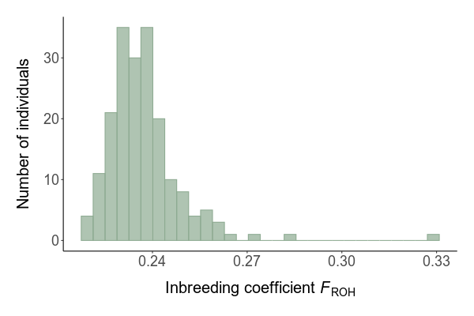

GERP++ annotates a focal genome based on evolutionary conserveration, where regions in the genome that show higher conservation across multiple different species are expected to face higher selective constraint. GERP score calculation, which indicate the reduction in the number of substitutions compared to neutral expectations, is done based on a multi-species alignment file. Higher GERP scores indicate higher evolutionary constraint. First, we create this MAF file using Progressive Cactus, then we calculate GERP scores genome-wide, and select genomic positions with SNPs in our population.
3.2 Methods
3.2.1 Creating the MAF
We use the publicly available 363 avian genomes multi-alignment file as a starting point, and then reduce this file to exclude species of the Neoaves clade. All the GERP analyses were done using the cactus container.
Code
### Remove subtrees that are not needed for ltet analysis#set cactus scratch directoryCACTUS_SCRATCH=$(pwd)/scratch/# enter the containerapptainer shell --cleanenv\--fakeroot--overlay${CACTUS_SCRATCH}\--bind${CACTUS_SCRATCH}/tmp:/tmp,$(pwd)\--env PYTHONNOUSERSITE=1 \ docker:quay.io/comparative-genomics-toolkit/cactus:v2.5.1 # get stats on the original 363-avian multi-alignment filehalStats data/genomic/intermediate/cactus/363-avian-2020.hal > output/cactus/stats_original_363_hal.txt# copy the original file to then edit itcp data/genomic/intermediate/cactus/363-avian-2020.hal data/genomic/intermediate/cactus/363-avian-reduced.hal# remove subtrees to exclude neoaveshalRemoveSubtree data/genomic/intermediate/cactus/363-avian-reduced.hal birdAnc1halRemoveSubtree data/genomic/intermediate/cactus/363-avian-reduced.hal birdAnc57 halRemoveSubtree data/genomic/intermediate/cactus/363-avian-reduced.hal birdAnc69 halRemoveSubtree data/genomic/intermediate/cactus/363-avian-reduced.hal birdAnc318 #starts with Heliornis_fulicahalRemoveSubtree data/genomic/intermediate/cactus/363-avian-reduced.hal birdAnc319 #starts with Psophia_crepitanshalRemoveSubtree data/genomic/intermediate/cactus/363-avian-reduced.hal birdAnc320 #starts with Charadrius_vociferushalRemoveSubtree data/genomic/intermediate/cactus/363-avian-reduced.hal birdAnc321 #starts with Opisthocomus_hoazinhalRemoveSubtree data/genomic/intermediate/cactus/363-avian-reduced.hal birdAnc322 #stars with birdAnc57, so the big chunk of passerines but also a #some individual ancestral genomes left to excludehalRemoveGenome data/genomic/intermediate/cactus//363-avian-reduced.hal birdAnc322halRemoveGenome data/genomic/intermediate/cactus//363-avian-reduced.hal birdAnc1# get stats of our subset of genomeshalStats data/genomic/intermediate/cactus/363-avian-reduced.hal > output/cactus/stats_reduced_363_hal.txt#extract the reduced file halExtract data/genomic/intermediate/cactus/363-avian-reduced.hal data/genomic/intermediate/cactus/363-avian-reduced.hal
Next, we add two genomes: Lyrurus tetrix and Lagopus lecura, using the cactus prepare function. To add the Lagopus lecura genome to the hal file, the assembly needs to be downloaded from NCBI which can be found on NCBI: https://0-www-ncbi-nlm-nih-gov.brum.beds.ac.uk/datasets/genome/GCF_019238085.1/.
Code
# In this file, we will use the cactus-update-prepare function to create two scripts that will allow us to add two genomes to our dataset# set scratch directoryCACTUS_SCRATCH=$(pwd)/scratch/#enter containerapptainer shell --cleanenv\--fakeroot--overlay${CACTUS_SCRATCH}\--bind${CACTUS_SCRATCH}/tmp:/tmp,$(pwd)\--env PYTHONNOUSERSITE=1 \ src/containers/cactus_v2.5.1.sif sh#first add Lyrurus tetrix, branchlengths will be corrected in a later stepcactus-update-prepare\ add branch \--parentGenome birdAnc334 \--childGenome Tympanuchus_cupido \ data/genomic/intermediate/cactus/363-avian-reduced.hal \ scripts/2_cactus/input_ltet.txt \--cactus-prepare-options\'--alignCores 4'\--topBranchLength 0.01 \ --outDir scratch/tmp/steps-output \--jobStore scratch/tmp/js \--ancestorName AncX > scripts/2_cactus/3_cactus_update_lyrurus_steps.sh # then add Lagopus leucuracactus-update-prepare\ add branch \--parentGenome AncX \--childGenome Lyrurus_tetrix \ data/genomic/intermediate/cactus/363-avian-reduced.hal \ scripts/2_cactus/input_lleu.txt \--cactus-prepare-options\'--alignCores 4'\--topBranchLength 0.01 \--outDir scratch/tmp/steps-output \--jobStore scratch/tmp/js \--ancestorName AncY > scripts/2_cactus/4_cactus_update_lagopus_steps.sh
This is just the preparation step, and two files will be outputted that can be used to update the .hal file. This is what these files look like (and then they have to be executed).
For subsequent steps, the resulting hal file is converted to maf format per scaffold for both GERP++ and the neutral tree calculation. Note that we only focus on the 30 largest scaffolds of the black grouse genome which over >95% of the genome, and only autosomal scaffolds.
Lastly, the final phylogenetic tree has to be recalculated according to the updated tree, and the branch lengths have to be calculated in substitutions/site (rather than million years ago). This analysis can be found on github and will not be included here as it contains many small steps integrated with in a snakemake workflow.
3.2.2 Calculate GERP scores
GERP scores were calculated per scaffold using snakemake using the following rule:
We are only interested in genomic locations where SNPs were found in our population. Therefore, we convert our VCF file and GERP files to bed format to overlap the SNPs with bedtools using the following commands (integrated in snakemake):
As these files are still very large, we loop over scaffolds within snakemake with an R script to count the number of mutations per individual per scaffold, both in homozygosity and heterozygosity using the following R formula (which is used for each scaffold separately and outputs a tsv file used for calculating mutation load in the next script).
Code
calculate_gerp_load <-function(gerp_vcf, scafno){## metadata on filenames and ids filenames <-fread("data/genomic/raw/metadata/idnames.fam") ids <-fread("data/genomic/raw/metadata/file_list_all_bgi_clean.csv")#merge idnames <-left_join(filenames[,c("V1")], ids[,c("loc", "id")], by =c("V1"="loc")) file <-read_tsv(gerp_vcf, col_names =c("chr", "start", "pos", "neutral_rate_n", "rs_score", "ancestral", "derived", "qual", "info","format", idnames$id) )#rename columns# only get GT info, PL and DP are filtered by already anyway gt <-c(11:ncol(file)) select_n3 <-function(x){x =substr(x,1,3)} file[gt] <-lapply(file[gt], select_n3)# replace genotype with RS value but separate per zygosity, do per ID gerp_load <-list()for( id in11:ncol(file)){ subset_id <- file[,c(1:10, id)] subset_id <- subset_id %>%mutate(gerp_cat =as.factor(case_when( rs_score <0~"< 0", #changed rs_score >=0& rs_score <1~"0-1", rs_score >=1& rs_score <2~"1-2", rs_score >=2& rs_score <3~"2-3", rs_score >=3& rs_score <4~"3-4", rs_score >=4~"4-5" ))) gerp_load_id <-list()for (i inc("< 0", "0-1", "1-2", "2-3", "3-4", "4-5")){#changed cat_subset <-subset(subset_id, gerp_cat == i) het_data <-subset(cat_subset, cat_subset[[11]] =="1/0"| cat_subset[[11]] =="0/1") hom_data <-subset(cat_subset, cat_subset[[11]] =="1/1") n_genotyped <-nrow(cat_subset) -nrow(subset(cat_subset, cat_subset[[11]] =="./.")) n_total <-nrow(cat_subset) df <-data.frame(id =colnames(file[id]),gerp_cat = i,scafno = scafno,n_total = n_total,n_genotyped = n_genotyped,het_data =nrow(het_data),hom_data =nrow(hom_data)) gerp_load_id[[i]] <- df } gerp_load_id <-do.call(rbind.data.frame, gerp_load_id)rownames(gerp_load_id) <-NULL gerp_load[[id]] <- gerp_load_id } gerp_load <-do.call(rbind.data.frame, gerp_load)return(gerp_load)}
3.3 Results
We identified 413,489 mutations with a GERP score higher than or equal to 4: 
These mutations were used to calculate mutation load in the next script.